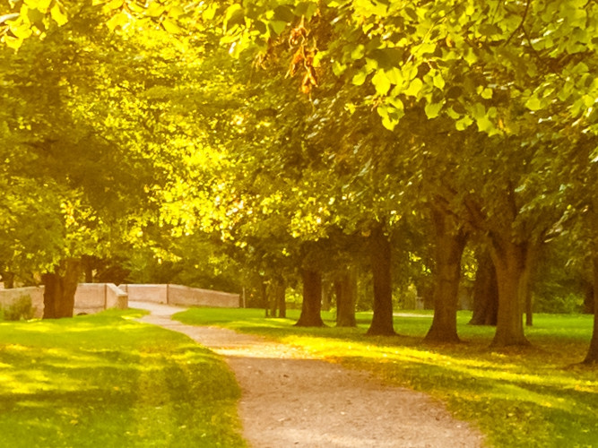

Conheça alguns dos pontos turísticos de Recife
Marco Zero

Foto do site Pinterest
Conhecido como o local de fundação da cidade do Recife.Marco Zero é um dos pontos mais importantes da capital Pernanbucana.
Paço do Frevo

Imagem de Freepik
O Paço do Frevo é um espaço cultural dedicado à difusão, pesquisa, lazer e formação nas áreas da dança e música do frevo localizado na cidade do Recife, capital de Pernambuco, Brasil.[1] Surgiu através de uma parceria entre a Prefeitura do Recife, a Fundação Roberto Marinho, o IPHAN e o Governo Federal.
Parque da Jaqueira
Imagem de wirestock no Freepik
O Parque da Jaqueira é uma área de lazer da cidade do Recife, localizado no bairro homônimo. O parque se localiza entre a rua do Futuro e a Avenida Rui Barbosa. É considerado o maior da cidade, porém, com a construção do Parque da Macaxeira, passará a ocupar o segundo posto.